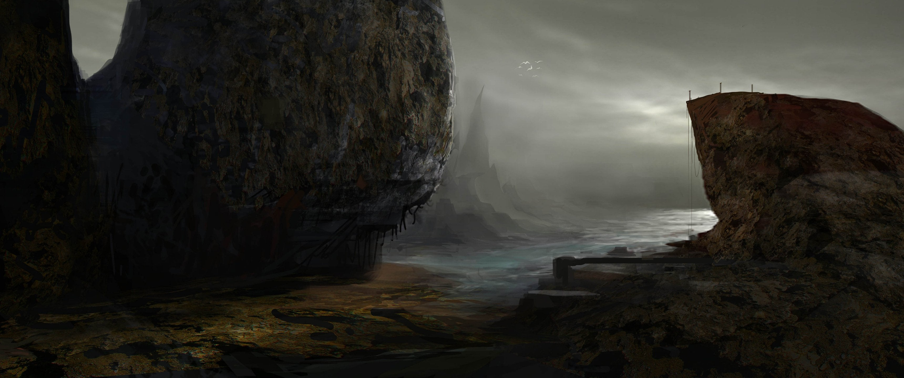

Enraders layout
Dette er den aller simpleste formen for layout, og den som er mest brukt
når en lager sider til mobil. Det er ukomplisert og lett å se på. Pass på
å bruke elementer som bryter teksten og gjør den luftig. En <hr> kan
gjøre undere for lesbarheten på en side. Det kan <br> også.